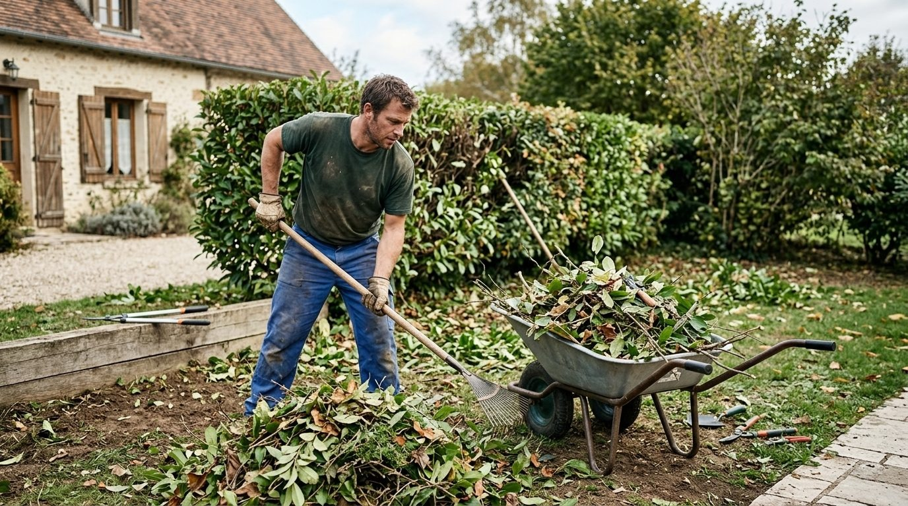

Aménager
Créer et préparer le jardin
Dessin des espaces, plantation, terrassement et nivellement du terrain, avant de semer ou de planter.
- Création d'espaces verts
- Plantation
- Terrassement
- Nivellement
Aménagement paysager · Le Val-Saint-Germain (91)
A.R Paysage aménage et entretient les jardins du Val-Saint-Germain et des environs : création, plantation, terrassement, tonte, taille de haies et évacuation des déchets verts.

Prestations
Du premier coup de bêche à l'entretien de saison, A.R Paysage s'occupe de votre jardin à chaque étape.
Aménager
Dessin des espaces, plantation, terrassement et nivellement du terrain, avant de semer ou de planter.

Entretenir
Entretien courant de la pelouse, des haies et des massifs, avec évacuation des déchets verts.
Réalisations
Pelouses, haies et massifs : quelques scènes de jardin.


Au fil de l'année
L'entreprise
A.R Paysage s'est installée au Val-Saint-Germain, en Essonne, pour aménager et entretenir les jardins des environs.
Contact
Parlez de votre projet directement à A.R Paysage, au Val-Saint-Germain.
06 99 20 18 49